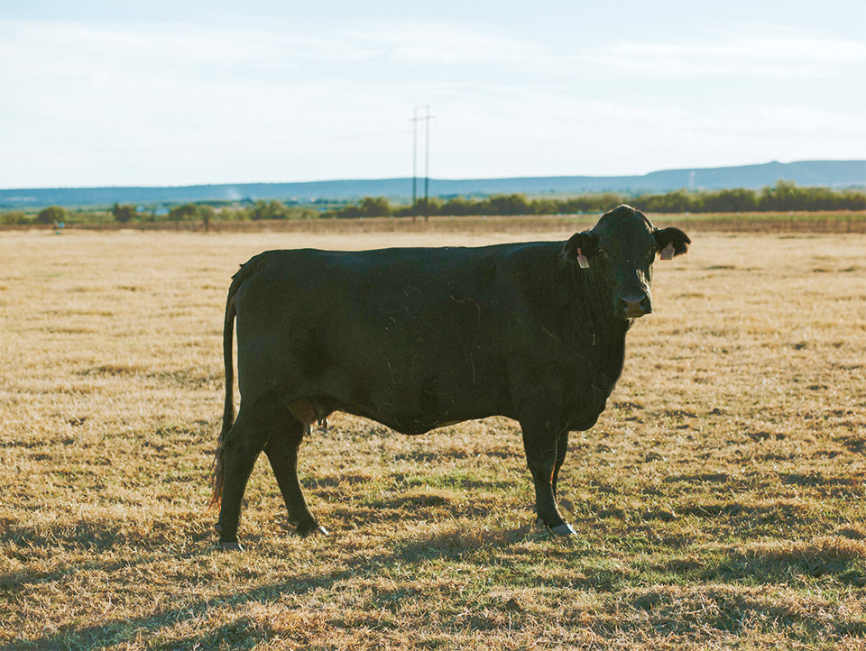
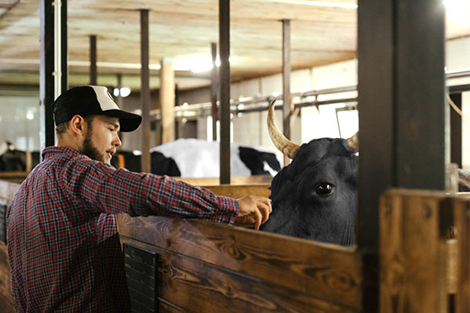
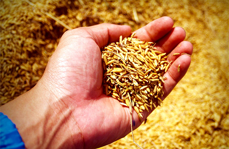
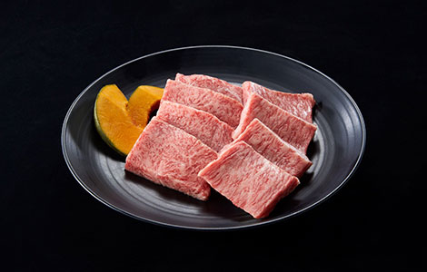
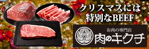

宮崎県小林市から全国、そして全世界へ！ 自然豊かなこの街で育った良質な黒毛和牛を お店で、お家でどうぞご堪能ください。
市内生産農家紹介 →


小林の黒毛和牛は土地にこだわり食事にこだわり。 「おいしい」につながるすべての工程に こだわりを持って育てています。
ステーキの王様「サーロイン」 幻の部位「サンカク」をはじめ、 「センマイ」や「テール」など ホルモンまで小林の黒毛和牛は 丸ごとすべて一級品。
部位紹介 →

宮崎県の南西部に位置する小林市。 小林、須木、野尻の3つのエリアからなり、 市の南西部には霧島連山、北部には 九州山地の山々が連なっています。
※こばやしeBooks「こばやしの宝もの。」より
